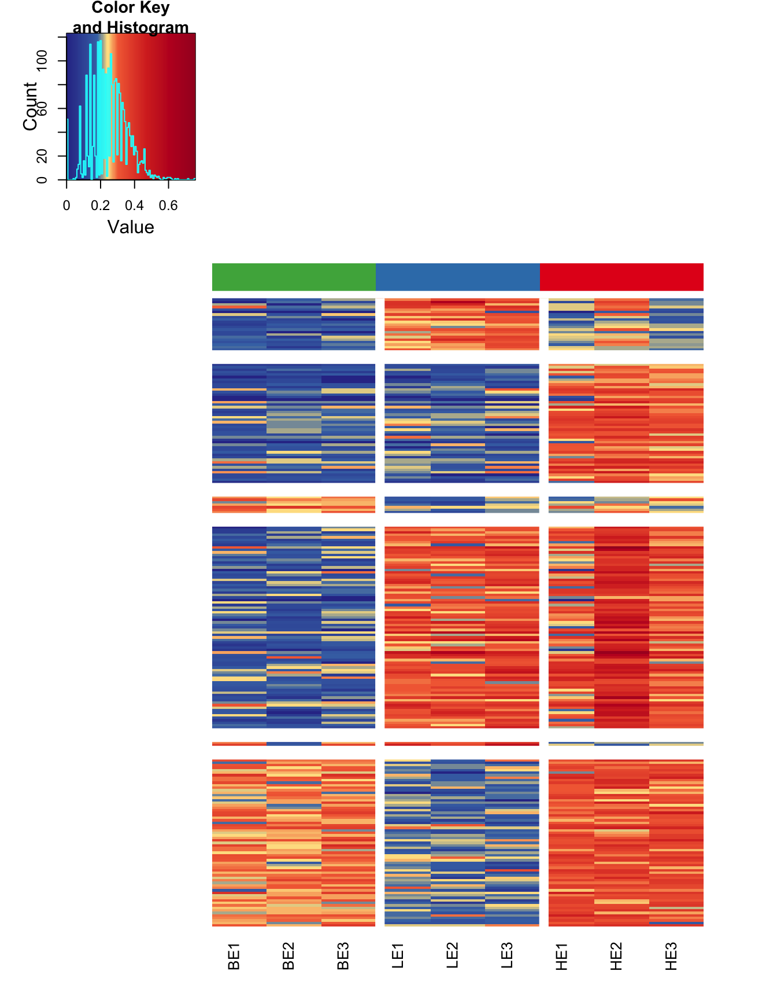
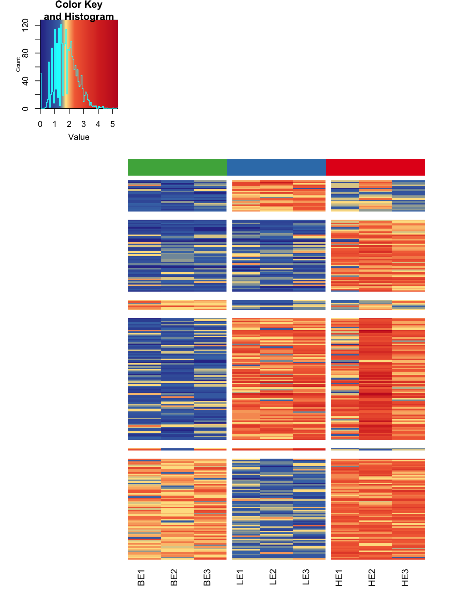

This how-to will demonstrate the use of Methylaction to detect differentially methylated regions (DMRs) among three groups using data from MBD-isolated Genome Sequencing (MiGS). While Methylaction is designed for genome-wide analysis, this example data is only for a subset of the genome and a subset of samples so the example can be worked through quickly. Please refer to the function documentation for advanced options.
RAM and CPU requirements will depend on the depth of the sequencing and the number of samples and groups. We recommend very high performance machines. As a reference, we used a linux server with 20 cores of 2.80GHz CPUs and 64GB of RAM for a genome-wide analysis of 22 samples across 3 groups. A high performance computing cluster (HPC) was used to obtain 1,000s of permutations.
For the purposes of the example, less CPU and RAM are required. This how-to has been tested on a MacBook Pro with a 2.4 GHz CPU and 8 GB of RAM.
First, start R (by typing the “R” command at the linux command line) and install pre-requisite packages from Bioconductor:
source("http://bioconductor.org/biocLite.R")
biocLite(c("GenomicRanges","IRanges","devtools","DESeq","GenomicAlignments",
"Repitools","Rsubread","ggbio"))Then, install both Goldmine and Methylaction from GitHub. Be sure to accept installation of any additional pre-requisite packages from CRAN.
library(devtools)
install_github("jeffbhasin/goldmine")
install_github("jeffbhasin/methylaction")Please obtain the “methylaction_demo.tar.gz” file and extract it. This contains all the example input data needed to complete this how-to.
From the linux command line, use the command “tar -zxvf methylaction_demo.tar.gz” for extraction.
Note that your session of R must have the working directory set to the location of the “methylaction_demo” folder extracted from the tar.gz file so paths to files in this how-to will be valid. Use the “setwd()” function to set this directory.
For example (change to your location):
setwd("/Users/bhasinj/Documents/methylaction_demo")First, start R, and load the methylaction R package into the session.
library(methylaction)Unique sample identifiers, paths to BAM files, group assignments, and any sample covariates are defined in a CSV file. Please see “input/samples.csv” for an example of the format. Note that comparison groups must be ordered as you want the groups to appear in the output results. This is important, because in the output, patterns between the groups will be coded using sequences of binary digits, where each digit represents a group, and this is the same as the order the groups are encountered in the sample CSV file. Optionally, a column called “color” can be provided that defines colors for each groups. These will be used in certain plotting and reporting functions. If this column is omitted, colors are automatically assigned using RColorBrewer.
The sample CSV file can be read into R using the readSampleInfo() command:
samp <- readSampleInfo("input/samples.csv")## Found 9 samples in 3 groups
## Group order for pattern and contrast digits will be: benign, low, high
## Number of samples in each group:## benign low high
## 3 3 3print(samp)## sample group bam ancestry color
## 1 BE1 benign input/BE1.chr22.bam european #4daf4a
## 2 BE2 benign input/BE2.chr22.bam european #4daf4a
## 3 BE3 benign input/BE3.chr22.bam european #4daf4a
## 4 LE1 low input/LE1.chr22.bam european #377eb8
## 5 LE2 low input/LE2.chr22.bam european #377eb8
## 6 LE3 low input/LE3.chr22.bam european #377eb8
## 7 HE1 high input/HE1.chr22.bam european #e41a1c
## 8 HE2 high input/HE2.chr22.bam european #e41a1c
## 9 HE3 high input/HE3.chr22.bam european #e41a1cThe command will output confirmation of group sample sizes and group order.
All read alignments are read and processed from the BAM files into an RData workspace that is saved to disk, and this prevents the user from having to re-process data again for each run of Methylaction. The getReads() function obtains the coordinates of the read alignments from the BAM file. The initial stage of the program works with fragment counts in 50bp windows, which are also computed once and saved by the function getCounts().
There are two other variables specific to the experiment that are needed in the next step. These are the window size (we recommend 50bp) and the fragment size used for generating the sequencing library. This fragment size is not the read length – it is the average size of a fragment in the sequencing library that was prepared. Often this number is available from BioAnayzer results, and should be known to whomever did the sequencing library preparation for your study. In the case of paired end data, the fragsize variable can be set to “paired” and valid mate pairs will be used.
First, define the variables that will be needed for the preprocessing functions:
chrs <- "chr22"
fragsize <- 120
winsize <- 50
ncore <- 1Then, read in alignments and generate binned count tables (these steps may be memory, disk, and CPU intensive):
reads <- getReads(samp=samp, chrs=chrs, fragsize=fragsize, ncore=ncore)
counts <- getCounts(samp=samp, reads=reads, chrs=chrs, winsize=winsize, ncore=ncore)We recommend saving all of the above into a single preprocessing RData, which can be loaded prior to running the DMR detection step described next.
save(samp, reads, counts, winsize, fragsize, chrs, file="output/prepro.rd",compress=T)For future runs of DMR detection, the saved RData can be loaded rather than spending time re-preprocessing the data.
With all the preprocessing completed, differentially methylated regions (DMRs) can be detected using a call to the methylaction() function. There are many options to this function that will affect the DMR detection. Here we have used recommended defaults. See the function documentation for more details. This function performs multiple steps, which are all CPU, RAM, and disk intensive when run on larger data sets.
First, set the number of cores to use based on your hardware (we recommend reducing this number if there are memory issues):
ncore <- 1Then, run methylaction() to call DMRs:
ma <- methylaction(samp=samp, counts=counts, reads=reads, ncore=ncore)Finally, save the results object to disk:
save(ma,file="output/ma.rd", compress=T)It is also useful to save a DMR list as a CSV file for viewing in a spreadsheet application.
write.csv(makeDT(ma$dmr), row.names=FALSE, file="dmrs.csv")The function methylaction() is designed to output a great deal of information about the internals of the DMR calling in order to facilitate comparisons between different settings and to prevent needing to re-run the command on large datasets to view intermediate states. The output object is a list. For a list of all detected DMRs, look at ma$dmr. Each DMR is assigned a pattern code, where each digit represents a group. The pattern indicates the differential methylation status between the groups. All groups with the digit is 1 are hypermethylated with respect to all groups with the digit 0. See the ma$args object for the arguments provided to the call of methylaction() that generated the output. If you want to access data from any internal steps of the function, see the objects nested under ma$data.
The maSummary() function provides details about the intermediate stages of the method.
maSummary(ma)## stat count percent
## 1 Window Size 50
## 2 Total Windows 1026091
## 3 All Zero Windows (filtered) 440064 42.89
## 4 All Below FDR Windows (filtered) 409356 39.89
## 5 Signal Windows (move on to stage one) 176671 17.22
## 6 Windows Tested in Stage One 176671
## 7 Sig Pattern in Stage One 158274 89.59
## 8 Non-Sig Pattern in Stage One 0 0
## 9 Ambig Pattern in Stage One 18397 10.41
## 10 Regions Formed By Joining Adjacent Patterns 1351
## 11 Regions Tested in Stage Two 1351
## 12 Regions That Pass ANODEV 1330 98.45
## 13 ANODEV Sig with Sig Pattern 1263 94.96
## 14 ANODEV Sig with Non-sig Pattern 0 0
## 15 ANODEV Sig with Ambig Pattern 67 5.04
## 16 Total DMRs 1263The built-in function table() can be used to obtain counts of DMRs by pattern and “frequent” classification.
table(ma$dmr$pattern,ma$dmr$frequent)| FALSE | TRUE | |
|---|---|---|
| 001 | 41 | 53 |
| 010 | 465 | 21 |
| 011 | 98 | 86 |
| 100 | 80 | 12 |
| 101 | 241 | 72 |
| 110 | 87 | 7 |
| ambig | 0 | 0 |
DMRs can be visualized genome-wide via a heatmap or karyogram.
maHeatmap(ma)
maKaryogram(ma=ma, reads=reads)
In this case, the Karyogram only spans chr22 due to the subset of data for this example.
It is also useful to view DMRs and the windowed sequencing read counts in a genome browser, such as the UCSC genome browser. The maBed() and maTracks() functions can create BED files suitable for uploading as custom tracks to http://genome.ucsc.edu/.
maBed(ma,file="dmrs.bed")
maTracks(ma=ma, reads=reads, path="beds")Because of the two stage testing approach, type I error rates may be inflated with this method. To determine if this level is acceptable, we have implemented permutation and bootstrapping approaches. This establishes a false discovery rate (FDR) for each pattern of DMR among the groups. If these FDRs are too high, they can be recalculated at lower p-value thresholds until they reach acceptable levels. Then, DMRs filtered at this p-value can be used as the definitive list for the study.
Bootstraps can be enabled by adding the “nperms” and “perm.boot” options to methylaction(). The resulting output list will then have an “fdr” object that reports false discovery rates (FDRs).
ma <- methylaction(samp=samp, counts=counts, reads=reads, perm.boot=T, nperms=3, ncore=ncore)print(ma$fdr)| pattern | type | nDMRs | permMean | permSD | permCV | FDRpercent |
|---|---|---|---|---|---|---|
| 001 | all | 94 | 31.33 | 18.56 | 0.59 | 33.33 |
| 001 | frequent | 53 | 3.33 | 3.51 | 1.05 | 6.29 |
| 001 | other | 41 | 28.00 | 17.06 | 0.61 | 68.29 |
| 010 | all | 486 | 6.33 | 6.03 | 0.95 | 1.30 |
| 010 | frequent | 21 | 2.67 | 3.79 | 1.42 | 12.70 |
| 010 | other | 465 | 3.67 | 3.21 | 0.88 | 0.79 |
| 011 | all | 184 | 255.33 | 379.16 | 1.48 | 138.77 |
| 011 | frequent | 86 | 79.00 | 128.27 | 1.62 | 91.86 |
| 011 | other | 98 | 176.33 | 251.24 | 1.42 | 179.93 |
| 100 | all | 92 | 287.00 | 495.37 | 1.73 | 311.96 |
| 100 | frequent | 12 | 91.67 | 158.77 | 1.73 | 763.89 |
| 100 | other | 80 | 195.33 | 336.60 | 1.72 | 244.17 |
| 101 | all | 313 | 22.67 | 34.20 | 1.51 | 7.24 |
| 101 | frequent | 72 | 2.67 | 2.52 | 0.94 | 3.70 |
| 101 | other | 241 | 20.00 | 32.08 | 1.60 | 8.30 |
| 110 | all | 94 | 216.67 | 206.29 | 0.95 | 230.50 |
| 110 | frequent | 7 | 61.00 | 38.97 | 0.64 | 871.43 |
| 110 | other | 87 | 155.67 | 167.46 | 1.08 | 178.93 |
| all | all | 1263 | 819.33 | 1063.48 | 1.30 | 64.87 |
| all | frequent | 251 | 240.33 | 320.38 | 1.33 | 95.75 |
| all | other | 1012 | 579.00 | 743.21 | 1.28 | 57.21 |
Finally, save the results object to disk:
save(ma,file="output/ma.rd", compress=T)If “perm.boot” is set to be FALSE, then regular permutations (sampling without replacement) are performed rather than bootstrapping (sampling with replacement).
See the maPerm(), maPermMerge(), and maPermFdr() for manual methods to run permutations. These are useful for spreading permutations across multiple machines or in a high performance computing (HPC) environment.